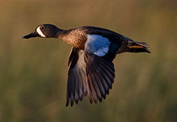
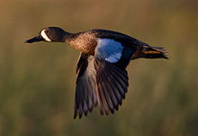

| Blue-winged Teal | |
|---|---|
|  | |
| Male | |
| Conservation status | |
| Binomial name | |
| Anas discors (Linnaeus, 1766) |
|
| Synonyms | |
|
Querquedula discors |
| Blue-winged Teal | |
|---|---|
|  | |
| Male | |
| Conservation status | |
| Binomial name | |
| Anas discors (Linnaeus, 1766) |
|
| Synonyms | |
|
Querquedula discors |
The Blue-winged Teal (Anas discors) is a small dabbling duck. Its placement in Anas is by no means certain; a member of the "blue-winged" group also including the shovelers, it may be better placed in Spatula. It is not a teal in the strict sense, and also does not seem closely related to the Garganey as was for some time believed. Indeed, its color pattern is strikingly reminiscent of the Australasian Shoveler.

The Blue-winged Teal is 40 cm (15.5") long, with a 58 cm (23") wingspan and weighs 370 g (13 oz). They have 2 molts per year and a third molt in their first year.[2] The adult male has a greyish blue head with a white facial crescent, a light brown body with a white patch near the rear and a black tail. The adult female is mottled brown, and has a whitish area at base of bill. Both sexes have sky-blue wing coverts, a green speculum, and yellow legs.[2][3]
Their breeding habitat is marshes and ponds throughout north and central North America. Their range is all of North America except western and northern Alaska, northern Yukon Territory, northern Northwest Territory, Northeastern Canada. They are rare in the desert southwest, and the west coast.[2][3] The nest is a shallow depression on the ground lined with grass and down, usually surrounded by vegetation.
They migrate in flocks to Central and South America. Some birds winter on the Gulf Coast and coastal California.[2][3] During migration, some birds may fly long distances over open ocean. They are occasional vagrants to Europe, where their yellow legs are a distinction from other small ducks like Common Teal and Garganey. DNA analysis of this species has revealed it is very close genetically to the Cinnamon Teal.
These birds feed by dabbling in shallow water at the edge of marshes or open water.[2] They mainly eat plants; their diet may include molluscs and aquatic insects.
The call of the male is a short whistle; the female's call is a soft quack.[2]

{kind=link}